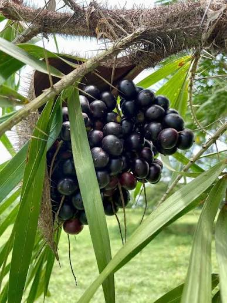

Sabores - Gastronomia y Tradicion
Saberes - Conocimiento Cientifico y Ancestral
Salud - Alimentacion y Bienestar
El corozo es una fruta silvestre muy representativa del Caribe colombiano, presente de forma natural en montes, potreros y caminos rurales de Córdoba, donde ha sido aprovechada tradicionalmente por las comunidades campesinas.
Proviene de una palma de tallos espinosos que crece en forma de matorral. Sus frutos son pequeñas drupas redondas de color amarillo o naranja intenso cuando están maduras, de sabor ácido y pulpa delgada que rodea una semilla dura.
Es una especie silvestre que se adapta con facilidad a climas cálidos y suelos variados, incluyendo terrenos secos y pedregosos, por lo que no requiere de un manejo agrícola intensivo para su desarrollo.
Con el corozo se prepara tradicionalmente el jugo de corozo, muy popular en la región Caribe, así como dulces y, en algunas comunidades, bebidas artesanales que forman parte de los saberes populares transmitidos oralmente.
Se encuentra de manera silvestre en zonas rurales de Córdoba, especialmente en potreros, cercas vivas y bordes de caminos, siendo recolectado de forma tradicional por las familias campesinas de la región.
El corozo aporta vitamina C y antioxidantes naturales, además de pequeñas cantidades de fibra en su pulpa, lo que lo convierte en un alimento silvestre con importantes propiedades nutricionales.
La fructificación del corozo suele concentrarse en los meses de mitad de año, cuando las palmas presentan mayor cantidad de frutos maduros disponibles para su recolección.
La recolección y venta de corozo representa un ingreso complementario para algunas familias rurales, especialmente durante su temporada de mayor producción, cuando se comercializa fresco o en jugo en mercados locales.
Su contenido de vitamina C y antioxidantes contribuye al fortalecimiento del sistema inmunológico y a la protección de las células frente al envejecimiento celular producido por los radicales libres.
El corozo es un fruto profundamente ligado a la memoria campesina del Caribe colombiano, asociado a la recolección familiar y a saberes populares que se han mantenido vivos a través de las generaciones en la región del Sinú.